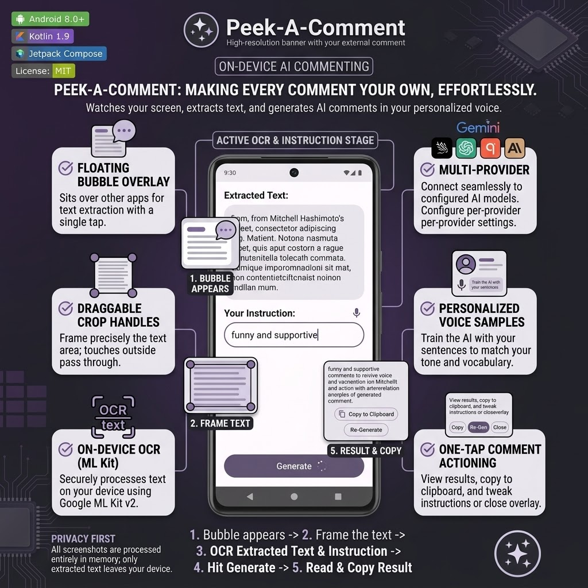
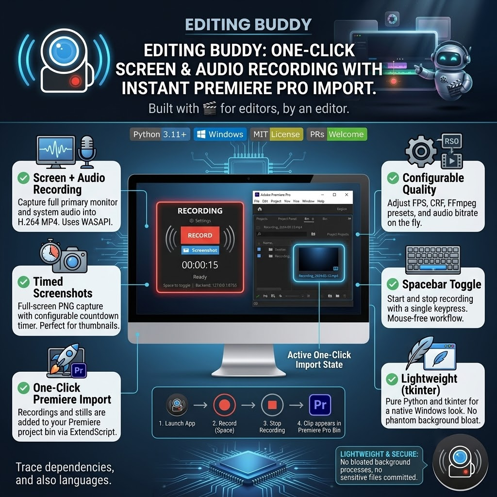
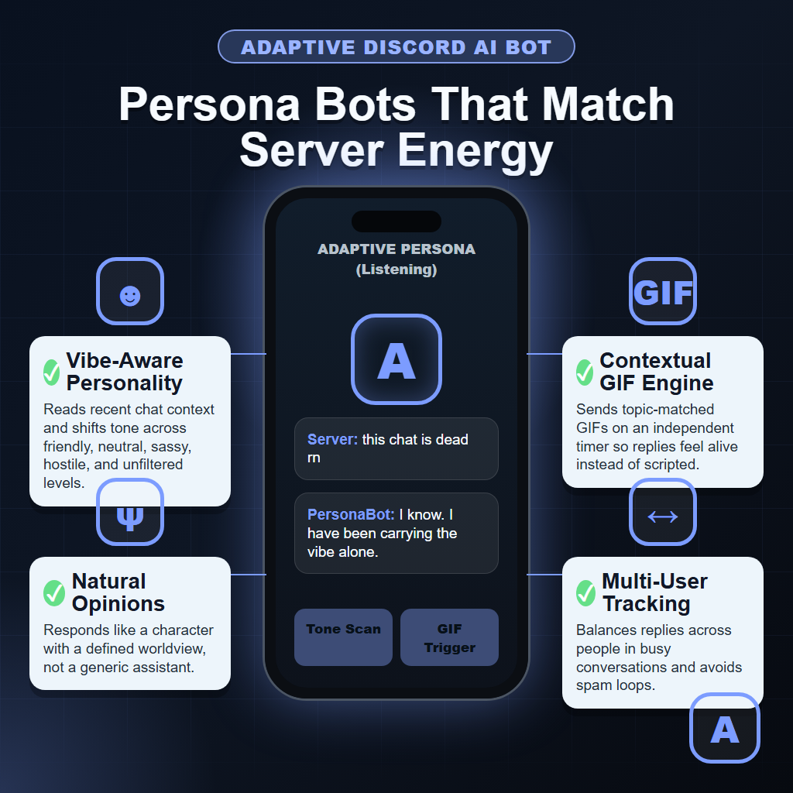

Kotlin / Rust / MCP
Peek-A-Comment
An on-device AI commenting assistant that watches the screen, extracts text, frames context, and generates comments in your personalized voice.
View repositoryGinej Neupane / GrimNej
I build practical AI systems: agentic workflows, automation tools, RAG pipelines, model-powered products, internal copilots, and fast MVPs for teams that need to move from idea to execution.

About

I am Ginej Neupane, better known in the developer community as GrimNej: The AI Guy, AI Solutions Architect, Agentic Engineer, GenAI Engineer, and Rapid MVP Builder.
I build practical AI systems: agentic workflows, automation tools, RAG pipelines, model-powered products, internal copilots, and fast MVPs for teams that need to move from idea to execution without getting trapped in endless planning.
My strongest suit is rapid execution. If an idea needs a technical verdict, I can break it down, choose the right architecture, ship a working foundation quickly, and keep adapting as the product and AI landscape change.
Agentic systems, GenAI products, automation, RAG, and internal copilots.
Idea breakdown, technical verdicts, architecture, prototypes, and iteration.
Tools, deployments, cloud, model workflows, and whatever gets the product built.
Selected builds

Kotlin / Rust / MCP
An on-device AI commenting assistant that watches the screen, extracts text, frames context, and generates comments in your personalized voice.
View repository
Python / AI coding engine
Bridges a software idea and a production-grade architectural foundation with repository context, dependency maps, and codebase-aware retrieval.
View repository
TypeScript / speech tooling
A browser-based voice-following teleprompter for readers who need real-time script alignment, contextual phrase highlighting, and automatic smart scrolling.
View repository
Python / Premiere workflow
A one-click screen and audio recording workflow that captures clips and stills, then imports them directly into Adobe Premiere Pro.
View repository
Python / semantic search
Searches through years of Discord history by meaning instead of exact keywords, turning scattered server conversations into a retrievable knowledge base.
View repository
Python / Discord AI
A Discord bot framework that creates personality-driven bots that adapt to server energy, conversation context, and topic flow.
View repositoryStack
Operating mode
I break down the idea, find the technical risk, and decide what needs to be proven before the work becomes expensive.
MVPs should answer a real question, reveal risk, and create a foundation that can survive the next iteration.
AI changes fast. I keep the architecture understandable while swapping in better tools, models, and deployment paths as needed.
Contact
Best fit: AI startups, enterprise teams, founders, and builders who need an agentic system, automation layer, internal AI tool, or MVP that proves the idea is technically real.